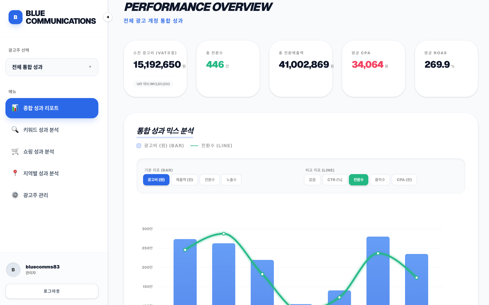
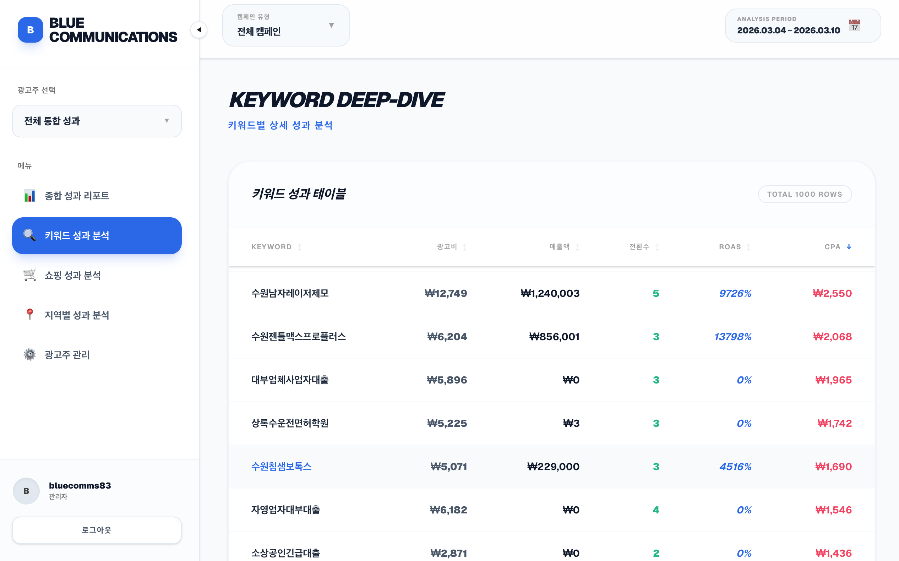
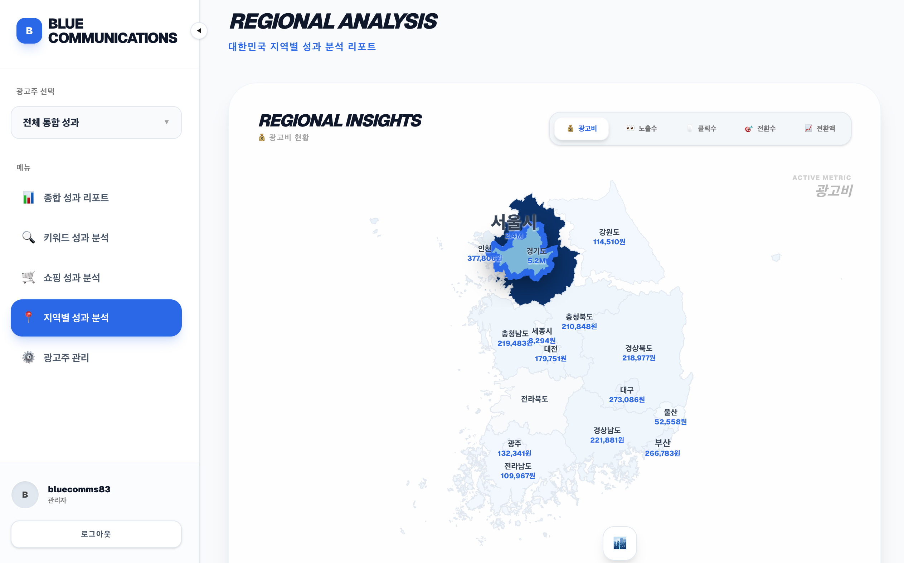

About Us
기획부터 세팅, 실행, 분석, 리포트까지 한 번 맡기고 끝나는 대행은 하지 않습니다. 성과가 정체되면 원인을 분석하고, 트렌드가 바뀌면 방향을 선제적으로 제안합니다.
업종·예산·타깃·목표에 따라 채널과 크리에이티브를 유연하게 설계합니다. 고정 공식 없이, 브랜드 상황에 맞춘 최적의 조합을 찾습니다.
실시간 대시보드와 월간 리포트로 단순 수치 보고를 넘어, 다음 액션을 제안하는 데이터를 제공합니다.
단기 성과가 아닌 브랜드의 성장 곡선을 함께 설계합니다. 내부 마케팅팀처럼 생각하고 움직이는 것을 목표로 합니다.
네이버·카카오·Google·Meta 등 주요 매체 운영 경험을 축적했습니다. 매체별 정책 변화에 민감하게 대응해 리스크를 줄이는 운영을 지향합니다.
매체를 잘 돌리는 것에 그치지 않고, 랜딩과 콘텐츠까지 함께 봅니다. 광고비가 담기는 그릇의 구조가 성과를 좌우합니다.
내부 마케터와 협업하듯 투명한 공유와 빠른 피드백 루프를 만듭니다. 광고주가 데이터를 직접 이해할 수 있도록 돕습니다.
Results-Driven
Performance

캠페인 운영 화면
데이터 대시보드
랜딩 페이지 시안Process
어떤 과정을 거치게 되나요?
세 번째 레이아웃 강점을 반영해 실제 진행 단계를 명확히 보여드립니다. 각 단계는 보고서로 끝나지 않고, 실제 실행 항목과 검증 지표까지 포함됩니다.
72시간 내 현황분석으로 비즈니스 누수 구간을 파악합니다.
차별화 메시지와 실행 시나리오를 구체적으로 설계합니다.
실제로 팔리는 구조를 만들어 적용하고 테스트합니다.
운영 데이터와 세일즈를 연결해 성장 구조를 고도화합니다.
Services
콘텐츠·광고·바이럴·디자인·영상·리포트를 하나로 엮어 브랜드에 최적화된 미디어 믹스를 설계합니다.
Google·Naver·Meta 기반 검색·디스플레이·리타겟팅 캠페인 운영.
유입부터 전환까지 끌어내는 상세·랜딩·블로그·영상 제작.
병의원·서비스·B2B 브랜드 대상 통합 마케팅 전략 수립.
단순 지표 나열이 아닌, 다음 액션이 보이는 리포트.
Portfolio Snapshot
아래 사례는 실제와 유사한 가상의 데이터입니다. 맞춤 설계를 통해 어떤 성과를 만들 수 있는지 보여드립니다.
네이버 검색·지도·브랜드 검색을 연동한 통합 퍼포먼스 운영.
온·오프라인 채널을 동시에 활용한 IMC 캠페인.
검색·콘텐츠·리타겟팅을 결합한 풀 퍼널 마케팅.
Ready to start?
간단한 정보만 남겨주시면, 담당 매니저가 예산과 업종에 맞춘 현실적인 전략을 함께 그려드립니다.